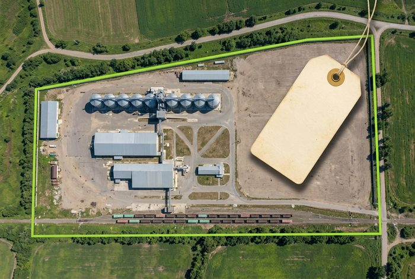

Как оценить промышленную площадку и обосновать цену
У земли с производственным назначением нет прайса. Две соседние площадки одинаковой площади могут отличаться в цене втрое — и вся разница будет лежать в документах, которые собственник обычно не читал.

Аргумент лежит в договоре, который никто не открывал
В работе по промышленной площадке в Амурской области собственник пришёл с выпиской из реестра и намерением продать. Что именно входит в актив, сколько он стоит и кому может быть нужен — не было сформулировано ни на бумаге, ни на словах.
Аренда на сорок девять лет со свободной переуступкой права. Это условие было прописано отдельным пунктом договора и снимало главное возражение любого покупателя: что будет с землёй после сделки и не придётся ли переоформлять всё заново.
Собственник об этом пункте знал, но не считал его аргументом. В материалах для покупателя он стал первой строкой.
Участок одиннадцать гектаров, четырнадцать объектов недвижимости и собственный железнодорожный путь семьсот метров с примыканием к магистрали. Путь в собственности — отдельный актив, который для профильного покупателя стоит больше, чем сама земля.
До разбора всё это описывалось как «участок с постройками».
Судебная строительно-техническая экспертиза, заключение кадастрового инженера, сведения об объектах третьих лиц на территории, запрос технических условий на примыкание к железной дороге. Каждый пункт — это вопрос, который иначе задал бы покупатель в середине переговоров.
Как считается цена промышленного объекта
Мы считаем двумя независимыми способами. Совпадение результатов означает, что цена крепкая. Расхождение — что нужно разбираться, и лучше разобраться до переговоров, а не во время.
что здесь чаще всего забывают
Срок. Согласование примыкания к магистральным путям, получение технических условий и разрешений занимает не месяцы, а годы. Готовый объект с оформленными правами экономит покупателю это время, и время имеет цену — особенно если у него есть контракт, который нужно исполнять уже сейчас.
как это делалось в нашей работе
Собрано 465 сопоставимых предложений по пяти регионам. Семнадцать карточек проверены поштучно: звонки продавцам, уточнение условий, выяснение, сколько объект в продаже и что с ним не так. Из этой выборки построен коридор цены за гектар с поправками на наличие путей, сетей и статуса территории.
Это скучная работа, которую нельзя ускорить. Но именно она не даёт покупателю сбить цену фразой «да таких площадок полно».
Отдельно считается то, что цену повышает: льготный режим территории, возможность выкупа земли по сниженной ставке, экономия на арендной плате за срок договора. Эти цифры покупатель проверит сам — значит, они должны быть посчитаны заранее и подтверждаться документом.
Восемьдесят пять вопросов, которые задаст покупатель
Профильный покупатель промышленного объекта — не частное лицо. Это компания с юристом, инженером и финансистом, и вопросы будут задавать все трое.
Основание владения, обременения, права третьих лиц на объекты внутри периметра, вид разрешённого использования, возможность переуступки. Один неотвеченный вопрос здесь останавливает сделку целиком, независимо от того, насколько хорош сам объект.
Мощность и точки подключения по электричеству, воде, теплу. Состояние путей и условия примыкания. Подъездные дороги и допустимая нагрузка. Санитарные зоны и что они запрещают размещать.
Арендная плата и её индексация, налоги, стоимость содержания, действующие льготы и условия их получения. Покупатель считает не цену покупки, а стоимость владения на горизонте нескольких лет.
Что здесь вообще можно делать: склад, производство, перевалка, аренда частями. Для каждого сценария — свои требования и своя экономика. Покупатель приходит со своим сценарием, и материалы должны отвечать сразу нескольким.
В нашей работе реестр вопросов по активу составил 85 позиций, и каждая была отработана до выхода на покупателей. Это и есть разница между «мы вам перезвоним, уточним» и ответом на встрече.
Материалы, по которым принимают решение
Промышленный объект редко покупают по объявлению. Его покупают после того, как посмотрели документы — значит, документы должны быть собраны так, чтобы их можно было отправить одной ссылкой.
Разбор целиком: кейс по промышленной площадке. Сайт актива, собранный в этой работе: промышленная площадка 11,07 га с железнодорожным путём в Амурской области.
Коротко и по делу
Что ещё разбираем по шагам
Расскажите про объект
Разговор на двадцать–тридцать минут: что за площадка, какие документы есть, какая цель. По итогам называется объём работы и стоимость. Если разбор сейчас не нужен, скажем об этом прямо.